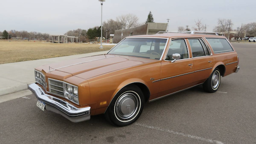

The summer of 1988
The majority of my family comes from the Midwest, but my parents had moved to Colorado, kids in tow, in the mid-'80s after my dad got a job there. We returned to the Midwest often, to visit family and friends, but this summer—the summer of 1988—something more ambitious was planned: an official family reunion, in a new place, a real vacation spot. My dad had a brother who'd also moved away from the Midwest, to Philadelphia, so perhaps it was he who suggested we all meet at the beach in Sea Isle City, New Jersey early that August, as I neared my tenth birthday.
My family didn't have the means to fly there, but since my parents had recently installed rear-facing, foldable seats in the very rear of our 1978 Oldsmobile Custom Cruiser station wagon, we packed all of our stuff into a car-top carrier, and proceeded to drive, non-stop, for 27 hours. At night we'd fold the rear seats down and my three younger siblings would sleep there, I'd lay on the middle bench seat, and my parents would switch off driving if they got tired. I remember vividly that it took 12 minutes to drive through Delaware.
Things I recall from Sea Isle City
- Having one line in a play put on by all of us cousins in one of the beach houses we were renting (I don't remember the line)
- Buying a small wooden sailboat within a wood frame as a souvenir and feeling that it was special because it was the only one at the shop with a light-blue hull (I still have it)
- Walking through town on the way to the ocean with my uncle and aunt—the ones from Philadelphia, with no kids—and them telling me that I didn't need to call them "Uncle" or "Aunt", but could just call them by their first names
- Hardly anything at all about the beach itself
The family car
Though, interestingly, the wagon below has Colorado plates, this was not my family's actual car—I found this image on the web. Our car was browner.

1978 Oldsmobile Custom Cruiser